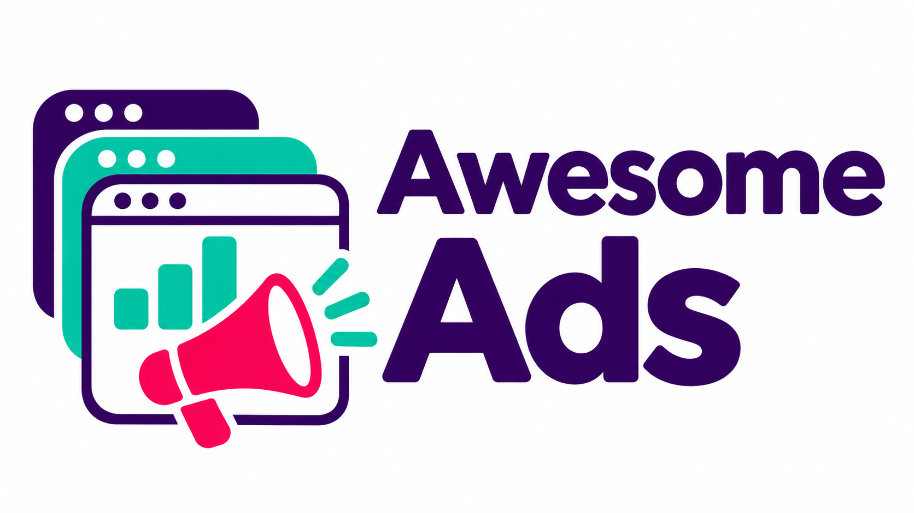

SUPERSYNERGY · AWESOME ADS

Awesome Ads.
Plattformen, Repos und Skills.
Stand 2026-11-12 · 545 Einträge. Quellen- und Skill-Abdeckung ist keine Kontointegration.
Anleitung · Alle Einträge · CSV · JSON
100 frühere Skill-Pins bleiben erhalten. Zusätzliche Skills wurden auf Datei-/Quellenebene indexiert. Dieser öffentliche Katalog enthält keine Kontoadapter. Neue YouTube-Funde sind Suchmetadaten, keine aktuelle Transkript- oder Trendanalyse.